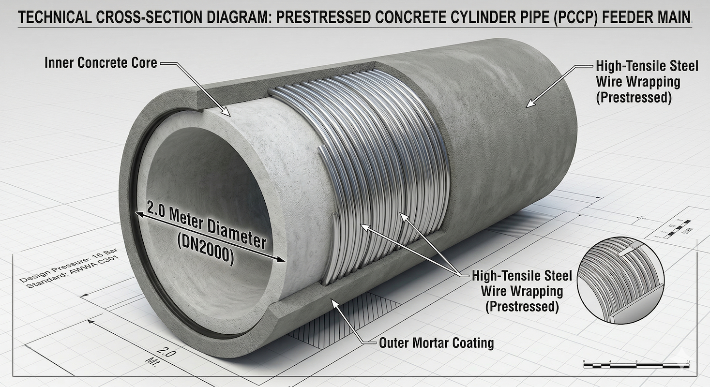
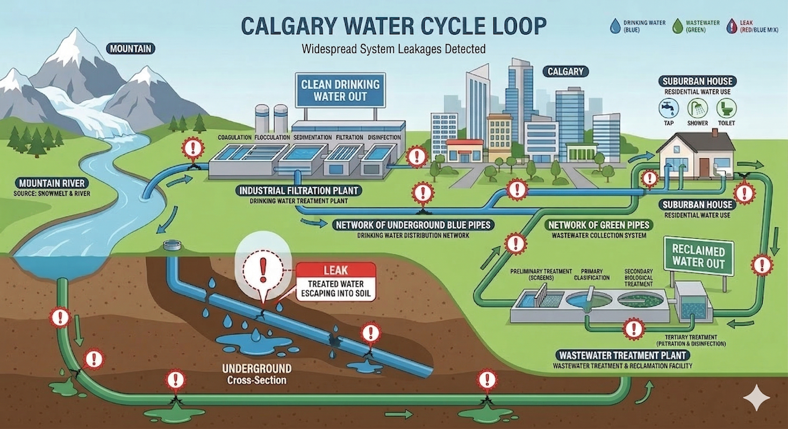

A 2026 Fiscal & Technical Brief for the City of Calgary
The city operates two major plants—Bearspaw and Glenmore—with a combined capacity of 950 megalitres per day. While the water is high quality, the cost of cleaning it is highly sensitive to spring runoff and turbidity levels.
| Customer Class | 2025 (per m³) | 2026 (per m³) | Annual Change |
|---|---|---|---|
| Residential Metered | $1.5972 | $1.7409 | +6.54% |
| Multi-Family | $1.4080 | $1.4992 | +6.07% |
| Business (Large) | $1.4453 | $1.5404 | +6.62% |
Source: City of Calgary Water Rates & Billing (2026)
It is significantly more expensive to clean water after use than to purify it for drinking. The 2025 residential wastewater rate of $1.7959 per 1,000L is roughly 12% higher than the potable supply rate.
Calgary assumes that 90% of the water you use returns to the sewer. Your bill is calculated as:
Where C_ww is the charge and V_metered is your total consumption.
Businesses that dump extra-strength waste (oil, grease, or chemicals) pay a premium to cover the intensified costs at the Bonnybrook plant.
Calculation based on Biological Oxygen Demand (B), Suspended Solids (S), and Grease (G).
Following the Bearspaw feeder main failures, the cost of maintaining the 5,350km pipe network has shifted from maintenance to emergency replacement. The capital budget is seeing a near five-fold increase between 2024 and 2026.
| Investment Category | 2024 Actual | 2026 Budget |
|---|---|---|
| Water Distribution Network | $45M | $363M |
| Wastewater Treatment Plant | $75M | $360M |
| Total Utility Capital | $225M | $1,004M |
Source: City of Calgary Budget 2026 Preview
Calgary’s water network consists of over 5,000km of pipes. The recent failures highlighted a critical vulnerability: the aging Prestressed Concrete Cylinder Pipes (PCCP). Replacing and reinforcing these is the primary driver behind projected debt increases.

Visualizing the scale: These pipes are large enough for a person to stand inside and are reinforced with miles of high-tension steel wire.
When water is lost to leaks, it is known as non-revenue water. The city loses the $0.8094 per cubic meter spent on treatment, and that lost water represents a direct hit to the utility’s ability to fund future repairs without raising rates further.
